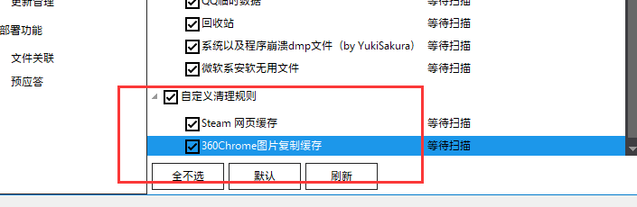

1. 小丸工具箱
1.是压制视频的
2.B站发布的视频有严格的要求，很容易被B站二压
3.软件资源：
https://pan.baidu.com/s/1VHonGHoZ0DmQBNZaRjML2A
提取码: crhu
- 百度的是不是最新版，作者没有更新，说是网站问题。大概
- 要找最新版，要去搜索 微博@小丸酱
4.软件预览：
<../img src=”../../img/26/2.png” alt=”2” style=”zoom:100%;” />
1.2 B站投稿限制
1.以前分辨率最高是1080P；
<../img src=”../../img/26/3.png” alt=”3” style=”zoom:90%;” />
- 这是别人2019-08-24 13:05:13投稿的教学视频
- 网址：https://www.bilibili.com/video/BV1L4411R75X?t=268
- 里面讲解是用pr导出+MediaCoder压制，我不用这些。
- 虽然软件讲解白搭，但有一些数据讲解可以学习。不过能学习的都在上图了
1.2 这里的视频码率应该不是目标码率，应该是视频总码率；
- 视频目标码率+音频目标码率(只是自己得出的假设概念)
2.现在可以4k了；2020-9-19 03:12:46
<../img src=”../../img/26/1.png” alt=”1” style=”zoom:90%;” />
- 不知道什么时候改版
- 但我屏幕就只有1080P，不过我也不需要录制2K及以上的视频
3.以前因为目标码率≤6000Kbps。
- 那么，什么是目标码率？什么是最高码率？
- 为什么最高码率可以大于目标码率？
3.1
目标码率：视频的最低码率(也就是说视频的最低码率不低于这个设定的目标码率)
最大码率：画面复杂时，可以达到的最大码率
不知道你注意到没，有一个比特率编码选项，一般是 VBR。VBR 就是动态码率编码，在画面复杂的情况下码率比较高，不复杂的时候码率就比较低，以达到充分利用数据资源的目的。要是把最大码率设置的很大，在画面复杂时，数据量就很大，硬件可能带不动，播放起来就容易卡。
比特率大了图像就更清晰，同时导出体积也会变大，但大到一定程度清晰度就不会再提高了。
H.264 视频编码建议码率
视频大小 分辨率 建议码率
480P 720x480 1800Kbps
720P 1280x720 3500Kbps
1080P 1920x1080 8500Kbps
作者：吱吱吱果冻柠檬
链接：https://www.zhihu.com/question/401033586/answer/1295057660
来源：知乎
著作权归作者所有。商业转载请联系作者获得授权，非商业转载请注明出处。
可是小丸工具箱里面只有一个码率设置。不知道是固定码率，还是最高码率啊

百度一下，看能百度到不；2020-9-19 03:20:33
没有百度到
3.2 自定义数据，一部分解析
https://www.bilibili.com/read/cv4430814/
- 虽然没百度到，但才5900Kbps，明显是固定码率
3.3 接着主题问题：以前因为目标码率≤6000Kbps。所以我们设置往往接近6000Kbps，例如5900Kbps；
往往会多200Kbps。例如5900Kbps，可能有6100，保险点5700好点。也许我被提醒码率高就是因为我设置成5900
现在可以2wKbps了，岂不是可以设置19000Kbps？
- 如上面小黑点所说，5900就被提醒了，更别说19000。
- 1.目标码率徒有虚名，根本无法支持到2w，还是现在6k的上限
- 2.可能是其他参数出现了需要压制的数据，而不是目标码率的错
- 3.音频那边的参数全是上限之下，所以我也没法。只能假设是目标码率的问题，上限码率又不知道是多少。
3.4 找到最高码率
1.Bandicam游戏录像下来的视频，在小丸工具箱的MediaTinfo里面看不到最高码率的参数与数据
2.但被小丸压制过的视频，有这个参数与数据

2.2 在最下面的详细信息里面
4.什么是总码率？
1.一个视频文件由图像部分和音频部分组成，总比特率=视频比特率+音频比特率。
2.用数据计算，看是不是这样
2.1 5900+196，接近总码率，看来这就是3.3-第一个黑点的答案了；
5.
2.Dism++x64
1.自定义清理：
http://www.chuyu.me/zh-Hans/Document.html?file=Dism++Library/自定义规则.md
2020-9-23 01:06:44

2.

3. RPG maker 翻译器
1.9做的翻译器；
2.来源：https://afdian.net/@AdventCirno
- 下载也是这个页面，9一般都在这里更新，比群好用；
3.预览：